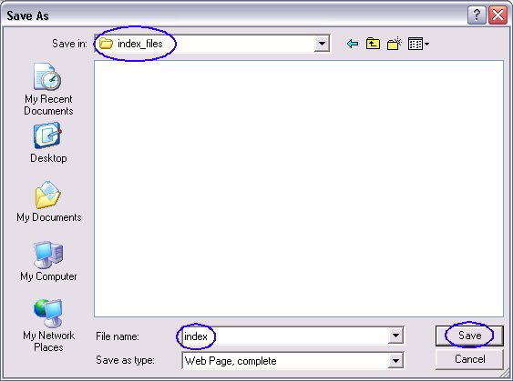

Exercise 1: Create Document
Introduction:
[Describe the learning goals of this exercise. Example is as following]
The goal of this exercise is to let you build a simple Struts application called struts-submit by following step by step instructions. All the codes and build script are already provided in this exercise. Even though the application is simple, it lets you explore most core features of the Struts framework listed below:
- Building ActionForm class which captures input form data
- Building Action class which contains business logic
- Request to Action mapping which is defined in Struts configuration file (struts-config.xml)
- Input validation
- Error handling
- Page navigation (View selection or Next page selection)
- Usage of Struts tags
Background information:
[Technical information that need to be understood by the attendee to finish the lab. Examples is as following.]
- The root directory of each lab must contain index.html. Each lab also can have corresponding PDF document but this is optional. (A zip file you will create will contain a root directory which is named after your lab.)
- You are welcome to use any software for creating the HTML document. If you have some HTML experience, NetBeans makes a very nice editor. These documents were produced with NetBeans. If you have no HTML experience, you can get by with Netscape Composer, but you will have trouble with formatting. See below for further comments.
- For instructor-led handson labs, hard-copy printouts will be created from either index.html or PDF file. Because of this, index.html file of instructor-led labs should be a single file rather than multiple files.
- Each handson lab can have other accompanying documents which can be in either PDF or HTML format
-
Tips for editing the content files (from Dan)
- Netscape Composer and StarOffice are really bad choices for editing your lab content. If you really have absolutely no HTML experience, they will work, but they will make your life harder in the end.
- The best choice of tools for editing your content pages is Dreamweaver. Unfortunately, it doesn't run on Solaris, and Sun doesn't provide you a licensed copy.
- For me, the next best choice is NetBeans. NetBeans has really nice HTML, CSS, and JavaScript support. It does syntax highlighting and code completion. It is not a WYSIWYG editor, however.
- If NetBeans is too much, my next choice would be any smart text editor, like JEdit or vim or Emacs.
- If you don't have access to a smart text editor, my next choice would be a dumb one, like Windows Textpad or vi.
- Only if I had no other choices would I turn to Composer or StarOffice. Of course, as I said, if you don't know any HTML, and you don't own a copy of Dreamweaver, they may be your only choices. If you go this route, see Sang's comments below.
-
Tips for using Netscape composer (from Sang)
- Since someone asked me what would be the suggested tips of using Netscape Composer for writing our handson lab document, I thought I would share what I learned so far. If you know any other tricks and tips, please share with the team.
- I use minimum features of Netscape composer. For example, basically all I do is to write heading2 for title, and bodytext for all the others
- Do not use Composer generated numberings schemes. It will make updating your documents very difficult. Create numbers manually
- For the placement of images, create a directory called index_files in the root directory and save the images in that directory. If you already created a document which contains images in different directory, open the document with netscape browser and then do ""save, complete". The Netscape will then create index_files directory and save all the images there. From that point on, you save the newly created images there.
Using the New Template
This year the lab template is very different from last year. Instead of having one monolithic document, each exercise is broken out into its own document. The index.html page is a generic page that detects the documents in your directory and builds a tab bar to display them. Also, this year we're using CSS stylesheets to make your life easier. The main goal of the new template is to reduce the formatting clutter to make the lab content easier to develop and maintain.
First thing to know is that to use the new template with a lab from last year, you can simply cut each exercise out of the old lab document and past it into its own document. No further modifications are necessary. You'll probably want to do some modifications, but none are required.
The new lab template enforces a naming scheme for your lab documents. First, the main page is the index.html page. DO NOT EDIT THE index.html PAGE! This page should be identical for all labs and may be overwritten by the labs staff at any time with no warning. The main page contains a tab for every exercise, an optional tab for a solution for each exercise, a tab for the introduction, and a tab for the summary.
The documents for the exercise tabs must be named "exercise<n>.html", where <n> is the number of the exercise, and the documents must be located in the same directory as the index.html file. The documents must be numbered sequentially, starting from 0. If the exercise0.html document is not present, no attempt will be made to load exercise1.html. If exercise1.html is not present, no attempt will be made to load exercise2.html. Etc. The index.html page will load as many exercises as it can find.
The documents for the solution tabs must be named "solution<n>.html", where <n> is the number of the exercise, and the documents must be located in the same directory as the index.html file. The documents must be numbered the same as the corresponding exercises. Solution documents are optional. If an exercise has no associted solution document, no solution tab will be created.
The intro document must be named intro.html. The summary document must be named summary.html.
Using the New Stylesheet
To make life simpler, we've provided a CSS stylesheet that automatically does formatting for you, if you set the correct style class on your HTML tags. The following style classes are available for you to use:
- j1holheader -- should be used with DIV, SPAN or P elements. Produces a section header, like "Background Information" above.
- j1holsubheader -- should be used with DIV, SPAN or P elements. Produces a subsection header, like "Using the New Stylesheet" above.
- j1hollist -- should be used with OL or UL elements. Produces a list with spacing between the top-level list items and spacing before any sublists. When used with OL elements, it also sets the numbering scheme to numeric at the top level, lower-case alphabetic at the second level, and lower-case Roman numerals at the third level. For an example, see the lists under "Steps to Follow" and "Background Information". In contrast, the list in the "Introduction" section does not use this style class.
- j1holcontents -- must be used with a DIV element. The complete body of every content page should be wrapped in a DIV of this style class.
- j1holnote -- should be used with DIV, SPAN or P elements. Produces text intended to get the reader's attention.
- j1holwarn -- should be used with DIV, SPAN or P elements. Produces text intended to warn the reader about something important.
- pagetitle -- must be used with a DIV element. Used for the lab title on the intro page.
- j1holduration -- should be used with DIV or P elements. Used for the lab and exercise durations at the top of the intro and exercise pages.
- j1holcopyright -- must be used with a DIV element. The contents of the DIV must be a P element with the copyright heading (usually "Copyright") and a PRE element with the contents of the copyright. Used at the top of the intro page.
- j1holcontacts -- should be used with DIV or P elements. Used to list the contributing authors to this lab at the top of the intro page.
- j1holupdated -- should be used with DIV or P elements. Used to list when this lab was last updated. Used at the top of the intro page.
-
j1holtip -- should be used with DIV or P elements.
If a j1holsubheader element is used within the DIV, it is treated specially.
Produces an inset to contain tips or best practices.
- codebox -- must be used with a DIV element. The contents of the DIV element must be a PRE element. Produces an inset where source code contained in the PRE element will be displayed. To collapse a portion of the source code, wrap that portion in a SPAN element with "collapsed" as its style class. See Exercise 2 and the Solution to Exercise 3 for examples.
- console -- must be used with a DIV element. The contents of the DIV element must be a PRE element. Produces an inset where the contents of the PRE elements will be displayed as though they were being printed in a terminal window. See Exercise 2 for an example.
Other Magic Elements
The new template uses a few magic elements to make things flow more smoothly. They are:
- The tag in the first tab (usually the intro document) with the id "j1holtitleid" will be used to set the title for the page. DO NOT EDIT THE index.html PAGE to change the page's title. Instead, to change the page's title, change the j1holtitieid element in the intro document. (In the template intro document, the pagetitle DIV is the j1holtitleid element. See pagetitle above.)
- By default, the intro tab is labeled "Introduction", the summary tab is labeled "Summary", the exercise tabs are labeled "Exercise <n>", and the solution tabs are labeled "Solution <n>". If, however, the HEAD element of one of those documents contains a META element whose name is "j1holtabname", the content attribute of that element will be used as that document's tab name instead. See the intro page and Exercise 1 for examples.
- To link to a page in a tab, use the anchors in the headings of the pages. For the intro tab, link to "#Intro". For the summary tab, link to "#Summary". For the exercises, link to "#Exercise_<n>". For the solution tabs, link to "#Solution_<n>".
-
This one is important! In order to make the page loading go faster, the index.html page stores information about the tabs in cookies. Namely, it stores a list of which pages exist and their titles. Because that information is cached, it can cause problems when you try to, for example, create a new exercise. Reloading the page in the browser will not cause the new page to be recognized. To clear the cookies so that you can see new pages (or remove deleted pages), you'll need to do one of two things. One, you could restart your browser. Two, you can type the following URL into your browser:
<your_url_here>/index.html#Clear
The "Clear" anchor will cause the cookies to be purged, and the whole set of pages will be reloaded fresh. For simplicity's sake, you may just want to include a link to "#Clear" on one of your pages so that you can just click it to purge the cookies. Just remember to remove it before JavaOne!
Converting an Old Document
To convert a lab document that uses an old template, you'll need to break it up into an intro page, a summary page, exercise pages, and solution pages. The easiest way to do that is to copy the text contents of your lab from the old document and paste it into the new template pages. If you are using Composer, this process will be a little difficult. On the bright side, though, it's highly unlikely that anything you do will break the template. At worst your pages might not be very well formatted.
Source Code
When including source code in your exercises and solutions, you
should use the codebox style class as described above. If you
are referencing code from your exercise text, such as a method
name, you should wrap the code in <CODE> tags. For
example, java.lang.String.substring() should be
marked as code.
Each lab should have an "exercises" directory and a "solutions" directory. Both should have subdirectories for every exercise in the lab. The exercises subdirectories should contain any files or source code needed to complete the exercises. The solutions subdirectories should contain all files modified in the exercises as they would be if the exercises were completed successfully (ideally, even).
Steps to follow:
-
Using your Netscape browser, do the following:
- Select File Menu
- Select Open File
- Read this document
-
When you see the document, do the following
- Select File menu
- Select Save Page As... as shown below in Figure-03.
Figure-03: Save the file
-
In the Save As window, go
to your lab directory. Let's say your lab code is set solaris10, then you go to solaris10/index_files directory and
save the file as index.html
file as shown below in Figure-04. Click Save button.

Figure-04: How to save the template file for your lab - Now you are ready to change this file. Whenever you want to save an image, save it under solaris10/index_files directory.
Summary:
In this exercise, you learned how to create your hands-on lab document.